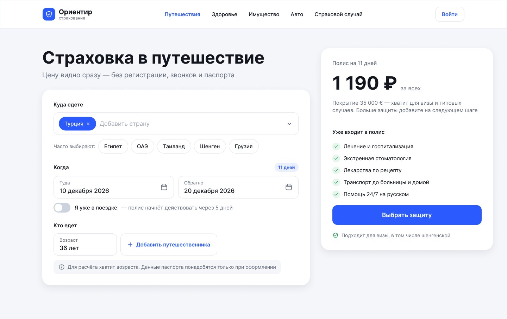
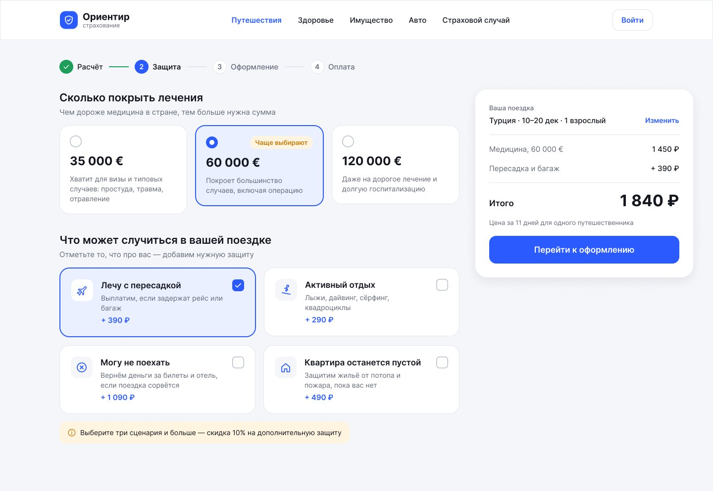
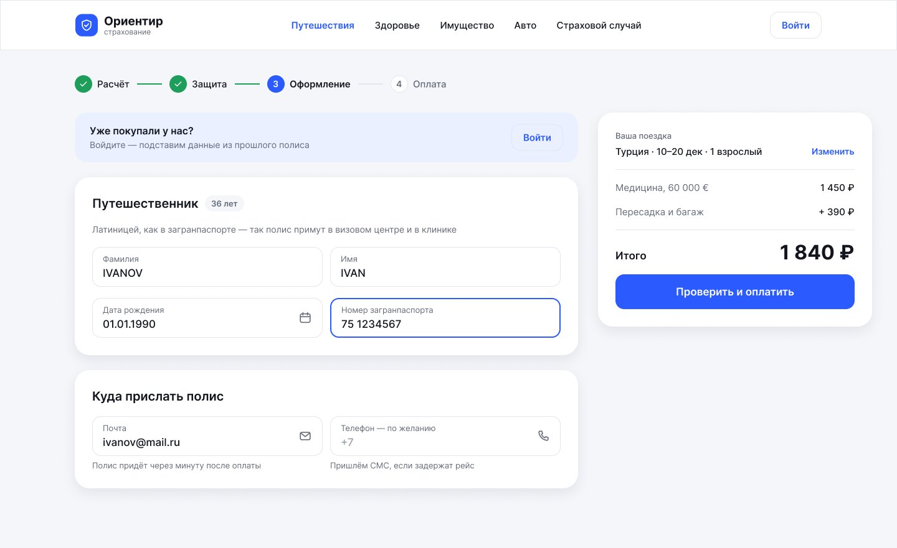
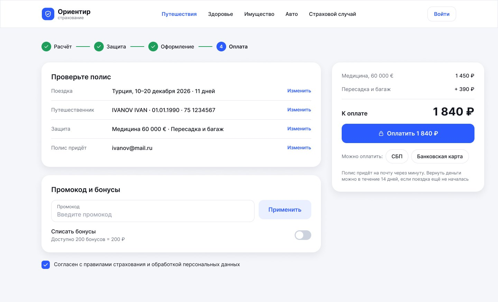
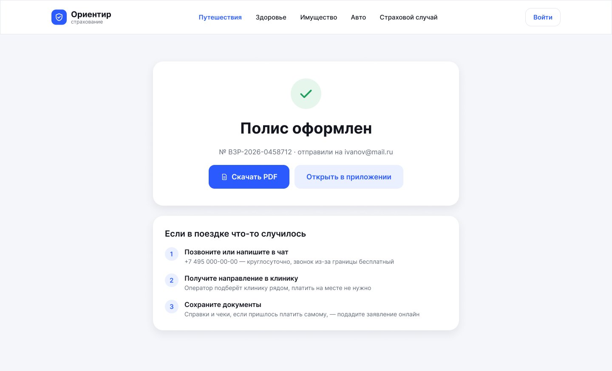
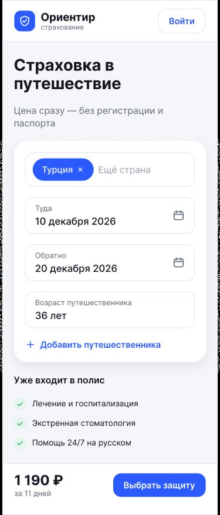
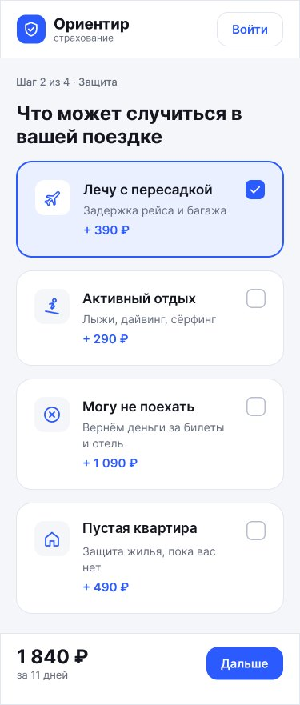

1Расчёт
Калькулятор на странице продукта. Популярные направления — одним нажатием, для расчёта хватает возраста. Цена появляется сразу, рядом — что уже входит в полис и подходит ли он для визы.

[ кейс · концепт ]
Человек приходит узнать, сколько стоит полис, а узнаёт это последним. Я разобрал покупку ВЗР у трёх страховых, нашёл, что мешает на пути к цене, и собрал концепт, где цена видна после трёх полей, а дополнительная защита выбирается по тому, что может случиться в поездке.
Про экраны. Исследование, концепция и решения — мои. Экраны сгенерированы с помощью ИИ по моему ТЗ: принципы, состав и тексты каждого экрана задавал я.
[ разбор рынка ]
Сценарий проверки: Турция, 10–20 декабря 2026, один взрослый, десктоп. Сбер Страхование и Ингосстрах пройдены до шага выбора опций — дальше нужны паспортные данные. Сайт Альфа-страхования открывался не из всех сетей, и расчёт не завершился, поэтому Альфа разобрана до кнопки «Рассчитать». Данные на 18.11.2026.
Мешает: сумма покрытия — просто «50 000 $» в списке, без объяснения, сколько нужно. Рядом с калькулятором бонусы и кросс-селл.
Взять: цена сразу после возраста, итог закреплён, «Что входит в полис» всегда на виду. 4 шага до оплаты.
Мешает: до цены — полная дата рождения и согласие на скоринг. Опции — 7 переключателей с ценами в копейках. 5 шагов до оплаты.
Взять: суммы покрытия человеческим языком: «хватит на большинство случаев», «даже для самого дорогого лечения».
Мешает: цена только по кнопке «Рассчитать» и после ожидания «до 45 секунд». Две опции отмечены заранее.
Взять: калькулятор прямо на странице продукта, всего 3 шага, сводка поездки справа.
[ инсайты ]
[ принципы ]
[ решение ]
Калькулятор на странице продукта. Популярные направления — одним нажатием, для расчёта хватает возраста. Цена появляется сразу, рядом — что уже входит в полис и подходит ли он для визы.

Три суммы покрытия с объяснением, кому какая подходит. Ниже — сценарии поездки: пересадка, активный отдых, риск не поехать, пустая квартира. Итог пересчитывается сразу и всегда виден справа.

Паспортные данные спрашиваем только здесь, с подсказкой, зачем латиница. Вход для автозаполнения предлагаем на этом шаге, а не на первом экране.

Вся покупка одним списком, каждую строку можно изменить. Промокод и бонусы собраны в одном месте перед оплатой, условия возврата — рядом с кнопкой.

Кроме PDF — короткая памятка: что делать, если в поездке что-то случилось.

Те же шаги сверху вниз, цена и кнопка закреплены внизу экрана.


[ дальше ]